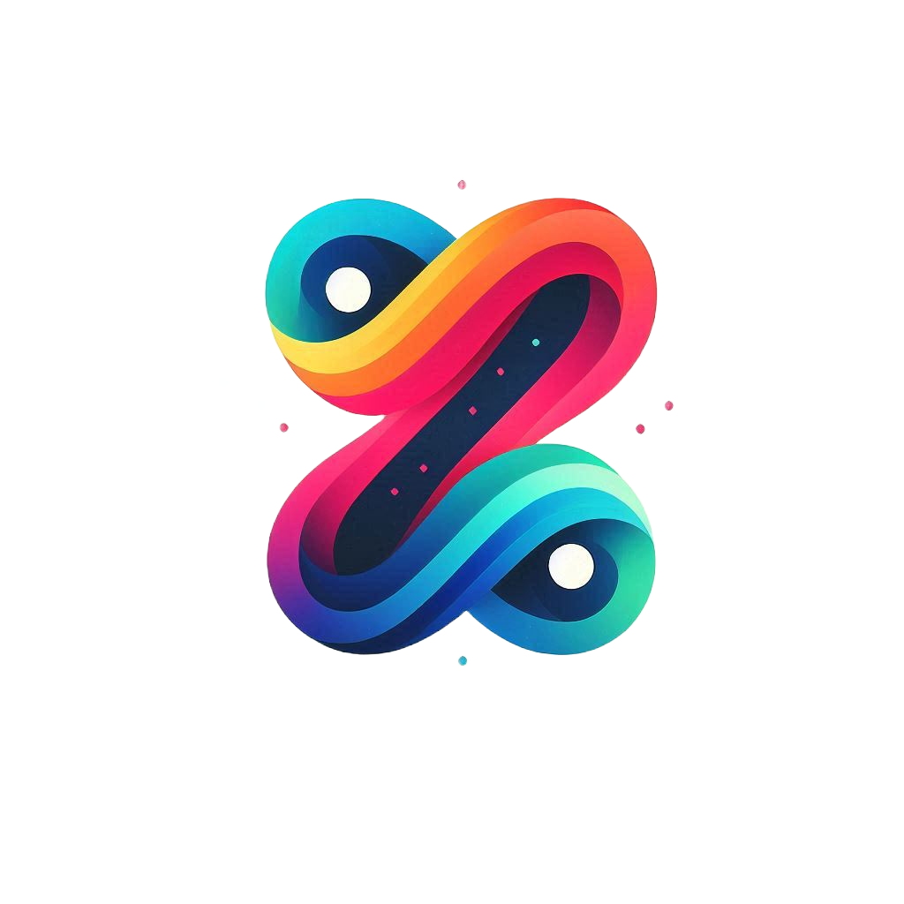

SDOS AI Project
Apr 2025 - Present

Associated with SDOS AI
SDOS AI is an advanced artificial intelligence program dedicated to student success, analyzing individual learning patterns to offer personalized recommendations and support.
Python (Programming Language), Django and +10 skills